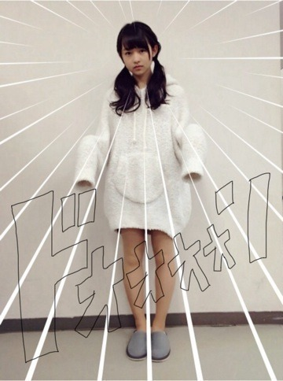
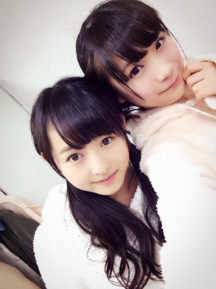

| 2014/02 12 Wed | 青でもよい血色。546 回目 |
今日は幕張メッセで個握でした。
1部ポニーテール

KINJIのデニムシャツに
E hyphenのニットワンピ
かわいい靴下に厚底のマーチン
靴下大人気だった！
みなさん全身ちゃんと見てるんですね。
気が抜けないですね。
2部 ポニーテール横にねじったやつ
3部 巻きツインテール

gelato pique
かわいいポーズができなかったのか
問いたいな。そこだな
だいすきなパーカーの部屋着！
あったかいよ。
こちらも好評でした。
ルームウェアは強い！！！
女子！！！！
握手会が始まる前に
雪が降ったのかな？
寒い中来てくれて
ありがとうございました。
冷え冷えの手を少しでも
あたためられたかな。
といいつつ私も冷え性なんだけど泣
今日は全完売だったみたい。
本当にありがとうございました！
選抜発表明けの握手会なので
その話題が多いかと思ったら
意外と少なくて。
私のブログが前向きすぎたのか
みなさん安心してくれたみたいで、
だから、嬉しかったです^^
LIVEDVDや横アリについてが
多かった！
横アリ行くまでにDVD見てねっ
最近は制作とかで忙しいっ
でもそれが楽しいっ
そうそう、
LIVEDVD副音声の動画で
私、すごい訛ってましたが
あれは正常なのです。
生まれは大阪で神奈川出身という
ややこしい人間のため
さゆりんたち大阪出身の子といると
余計訛ってしまいます。
お許しください。
どうしても治りません。
中途半端に訛った喋り方は
私の特徴と見てください笑
3月の握手会もよろしくお願いします！

おやすみなさい
まりか
コメント(491)
2014/02/12 00:06